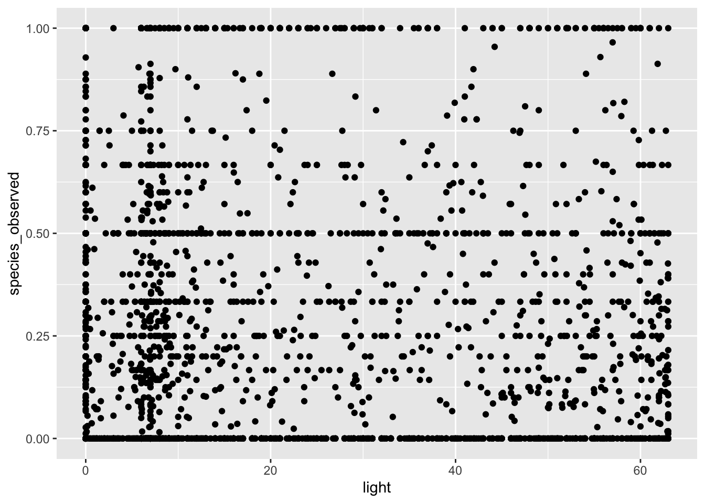
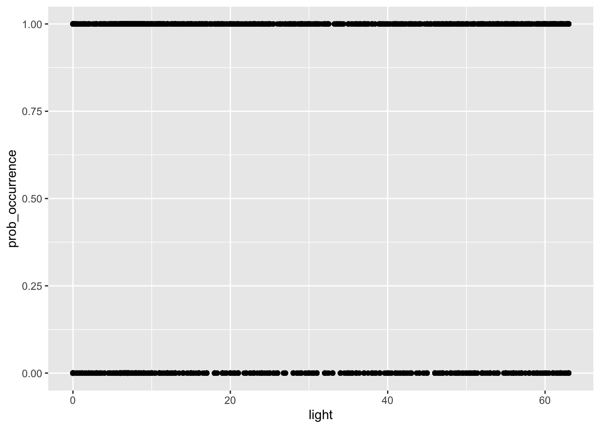
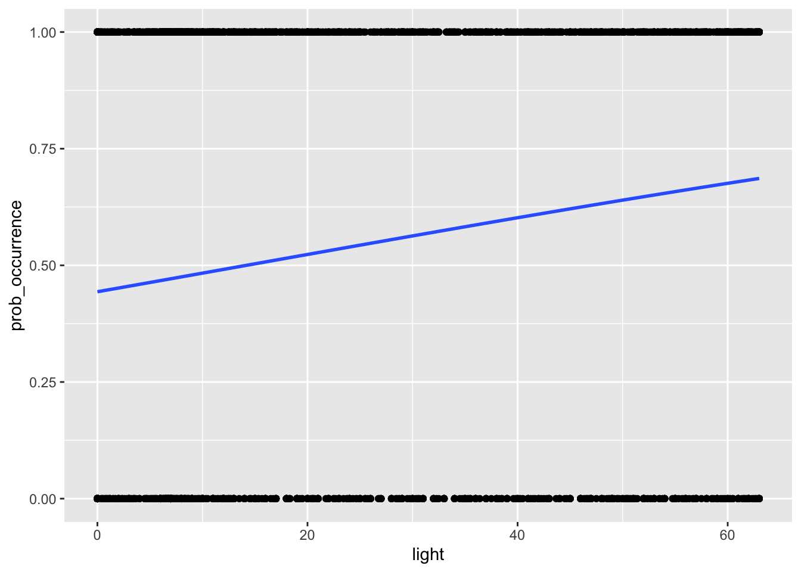
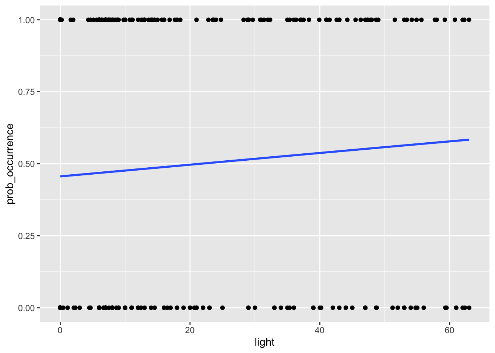

Last updated: 2021-12-03
Checks: 7 0
Knit directory: ebird_light_pollution/
This reproducible R Markdown analysis was created with workflowr (version 1.6.2). The Checks tab describes the reproducibility checks that were applied when the results were created. The Past versions tab lists the development history.
Great! Since the R Markdown file has been committed to the Git repository, you know the exact version of the code that produced these results.
Great job! The global environment was empty. Objects defined in the global environment can affect the analysis in your R Markdown file in unknown ways. For reproduciblity it’s best to always run the code in an empty environment.
The command set.seed(20211122) was run prior to running the code in the R Markdown file. Setting a seed ensures that any results that rely on randomness, e.g. subsampling or permutations, are reproducible.
Great job! Recording the operating system, R version, and package versions is critical for reproducibility.
Nice! There were no cached chunks for this analysis, so you can be confident that you successfully produced the results during this run.
Great job! Using relative paths to the files within your workflowr project makes it easier to run your code on other machines.
Great! You are using Git for version control. Tracking code development and connecting the code version to the results is critical for reproducibility.
The results in this page were generated with repository version 42ddee3. See the Past versions tab to see a history of the changes made to the R Markdown and HTML files.
Note that you need to be careful to ensure that all relevant files for the analysis have been committed to Git prior to generating the results (you can use wflow_publish or wflow_git_commit). workflowr only checks the R Markdown file, but you know if there are other scripts or data files that it depends on. Below is the status of the Git repository when the results were generated:
Ignored files:
Ignored: .DS_Store
Ignored: .Rhistory
Ignored: .Rproj.user/
Ignored: data/.DS_Store
Untracked files:
Untracked: data/.here
Unstaged changes:
Deleted: data/house_2018_light_occurrence_prediction.csv
Note that any generated files, e.g. HTML, png, CSS, etc., are not included in this status report because it is ok for generated content to have uncommitted changes.
These are the previous versions of the repository in which changes were made to the R Markdown (analysis/7_statistical_anlalysis_of_data.Rmd) and HTML (docs/7_statistical_anlalysis_of_data.html) files. If you’ve configured a remote Git repository (see ?wflow_git_remote), click on the hyperlinks in the table below to view the files as they were in that past version.
| File | Version | Author | Date | Message |
|---|---|---|---|---|
| Rmd | 42ddee3 | markravinet | 2021-12-03 | upload tutorial 7 |
For this tutorial, we finally have all of our data together in a single dataframe with the light pollution values and the mean presence/absence score for our chosen spatial resolution (5 km if you’re using the same settings as the tutorial). The next and final step is to try and quantify the relationship between light pollution and the probability a bird will occur at a given location. Read on to find out how!
As always, we first load the packages we will need. Much of what we will use here is actually already part of base R so we only need to load the tidyverse package to help with reading in data and visualising it.
# load the packages you need
library(tidyverse)Next we set our variable - here it is the path to the input file.
input_file <- "house_2017_light_occurrence_prediction.csv"Then all we need to do is read in the data. After this we’re ready to start analysing the data.
# read in the data
my_data <- read_csv(input_file)Rows: 3762 Columns: 4── Column specification ────────────────────────────────────────────────────────
Delimiter: ","
dbl (4): x, y, light, species_observed
ℹ Use `spec()` to retrieve the full column specification for this data.
ℹ Specify the column types or set `show_col_types = FALSE` to quiet this message.As always, it is good practice to plot our data to see what it shows and to have a think about it. We did this in the last tutorial, but we repeat the process here.
my_data %>% ggplot(aes(light, species_observed)) + geom_point()
# along the x-axis we have the strength of light pollution for a 5km grid square and then the frequency of
# occurrence within that grid squareThis figure shows us the strength of light pollution on the x-axis (measured using the pixel brightness) and the mean presence absence score for whether or not a species was observed. At the moment, the data is really noisy and actually not that informative. In fact, it is sort of hard to really think about what a presence absence score of 0.5 actually means.
The reason we get these intermediate scores is because we averaged over a 5km grid square. In some of those squares, our species of interest will be present in all of them, so the average score is 1, in some they will be absent in all of them, so the score will be 0. And then of course there are plenty of intermediate values.
But does this make sense for an analysis? Well not really because what we want to test is whether light pollution affects the probability a species is present or not. From our current data, any value greater than zero indicates the species is present, so what we need to do now is alter the data so that it reflects this. We can do that like so:
# mutate data
my_data2 <- my_data %>% mutate(prob_occurrence = ifelse(species_observed > 0, 1, 0))Here we used the dplyr function mutate to create a new column in our data frame, the prob_occurrence column. Using ifelse, we basically say that if the value of species_observed is greater than 0, we set it to 1, otherwise we set it to 0. We can replot this data to get an idea of what it might look like now.
my_data2 %>% ggplot(aes(light, prob_occurrence)) + geom_point()
Now we can see we only have 0 for no birds present and 1 for birds present - i.e. a simple binomial probability outcome. This means we are ready to perform a logistic regression.
To test whether the light index for a grid square influences the probablity of a bird species being present, we will use logistic regression, which is quite straightforward in R. Let’s set it up and take a closer look
# y ~ x
my_model <- glm(prob_occurrence ~ light, family = "binomial", data = my_data2)
# take a look at the model
summary(my_model)The function glm initiates the model and the family = "binomial" argument ensures we run a logistic regression. The key part of this call to glm is the formula prob_occurrence ~ light. This is equivalent to y ~ x where y is the dependent variable and x is the independent. In short we are asking, does y vary with x? This can be a little confusing in R at first as it inverts the traditional way you might have learned about how regression formula are set out, but with practice it gets easier to read. Simply put, here we are asking does the probability of occurrence of our bird species vary with the light pollution index?
Finally, we call summary on the model to get an idea of the output. Examining this output you can see that the light term is highly significant. The sign of the estimate for light is also positive, which indicates there is a positive relationship between light pollution and probability of occurence. In this example it is 0.016 - this essentially means that for every unit increase in light pollution, the probability of occurrence for this species, the house sparrow in the UK, increases by 1.6%.
Perhaps it is easier to understand this when we actually visualise the relationship on a figure, like we do with the code below:
# we can also visualise the relationship
my_data2 %>%
ggplot(aes(light, prob_occurrence)) + geom_point() +
stat_smooth(method="glm", method.args=list(family="binomial"), se=FALSE)
So you can see from this, a quite positive slope indicating that probability of occurence increases with light pollution.
NB if you have a very large number of observations, it might take some time to plot this relationship. So it might be helpful to subsample your data, i.e. reducing it to a lower number of randomly sampled observations in order to make it much easier to visualise.
You can do this by adding the sample_frac function to the code we ran previously. Like so:
# we can also visualise the relationship
my_data2 %>%
sample_frac(0.1) %>%
ggplot(aes(light, prob_occurrence)) + geom_point() +
stat_smooth(method="glm", method.args=list(family="binomial"), se=FALSE)
Note that here we sample just 10% of our original data but we still get the same relationship. It is important to note however this should only be done for visualisation, the actual models should be run on the full dataset.
And that’s it! We’ve now gone all the way from extracting our spatial data to actually running through a logistic regression and visualising the relationship. Congratulations!
sessionInfo()R version 4.1.2 (2021-11-01)
Platform: x86_64-apple-darwin17.0 (64-bit)
Running under: macOS Catalina 10.15.7
Matrix products: default
BLAS: /Library/Frameworks/R.framework/Versions/4.1/Resources/lib/libRblas.0.dylib
LAPACK: /Library/Frameworks/R.framework/Versions/4.1/Resources/lib/libRlapack.dylib
locale:
[1] en_GB.UTF-8/en_GB.UTF-8/en_GB.UTF-8/C/en_GB.UTF-8/en_GB.UTF-8
attached base packages:
[1] stats graphics grDevices utils datasets methods base
other attached packages:
[1] viridis_0.6.2 viridisLite_0.4.0 rgdal_1.5-27
[4] raster_3.5-2 rgeos_0.5-8 sp_1.4-5
[7] rnaturalearthdata_0.1.0 rnaturalearth_0.1.0 sf_1.0-3
[10] forcats_0.5.1 stringr_1.4.0 dplyr_1.0.7
[13] purrr_0.3.4 readr_2.0.2 tidyr_1.1.4
[16] tibble_3.1.5 ggplot2_3.3.5 tidyverse_1.3.1
[19] auk_0.5.1 workflowr_1.6.2
loaded via a namespace (and not attached):
[1] nlme_3.1-153 fs_1.5.0 lubridate_1.8.0 bit64_4.0.5
[5] httr_1.4.2 rprojroot_2.0.2 tools_4.1.2 backports_1.3.0
[9] utf8_1.2.2 R6_2.5.1 KernSmooth_2.23-20 mgcv_1.8-38
[13] DBI_1.1.1 colorspace_2.0-2 withr_2.4.2 tidyselect_1.1.1
[17] gridExtra_2.3 bit_4.0.4 compiler_4.1.2 git2r_0.28.0
[21] cli_3.1.0 rvest_1.0.2 xml2_1.3.2 labeling_0.4.2
[25] scales_1.1.1 classInt_0.4-3 proxy_0.4-26 digest_0.6.28
[29] rmarkdown_2.11 pkgconfig_2.0.3 htmltools_0.5.2 highr_0.9
[33] dbplyr_2.1.1 fastmap_1.1.0 rlang_0.4.12 readxl_1.3.1
[37] rstudioapi_0.13 farver_2.1.0 jquerylib_0.1.4 generics_0.1.1
[41] jsonlite_1.7.2 vroom_1.5.5 magrittr_2.0.1 Matrix_1.3-4
[45] Rcpp_1.0.7 munsell_0.5.0 fansi_0.5.0 lifecycle_1.0.1
[49] terra_1.4-11 stringi_1.7.5 whisker_0.4 yaml_2.2.1
[53] grid_4.1.2 parallel_4.1.2 promises_1.2.0.1 crayon_1.4.2
[57] lattice_0.20-45 splines_4.1.2 haven_2.4.3 hms_1.1.1
[61] knitr_1.36 pillar_1.6.4 codetools_0.2-18 reprex_2.0.1
[65] glue_1.5.0 evaluate_0.14 modelr_0.1.8 vctrs_0.3.8
[69] tzdb_0.2.0 httpuv_1.6.3 cellranger_1.1.0 gtable_0.3.0
[73] assertthat_0.2.1 xfun_0.28 broom_0.7.10 e1071_1.7-9
[77] later_1.3.0 class_7.3-19 units_0.7-2 ellipsis_0.3.2